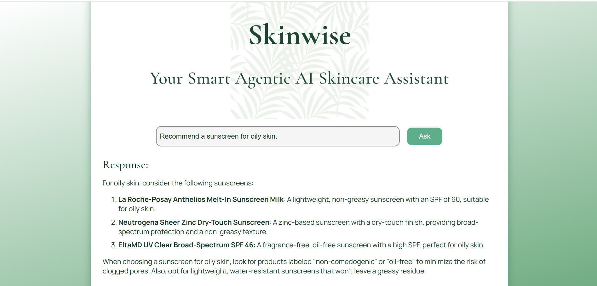
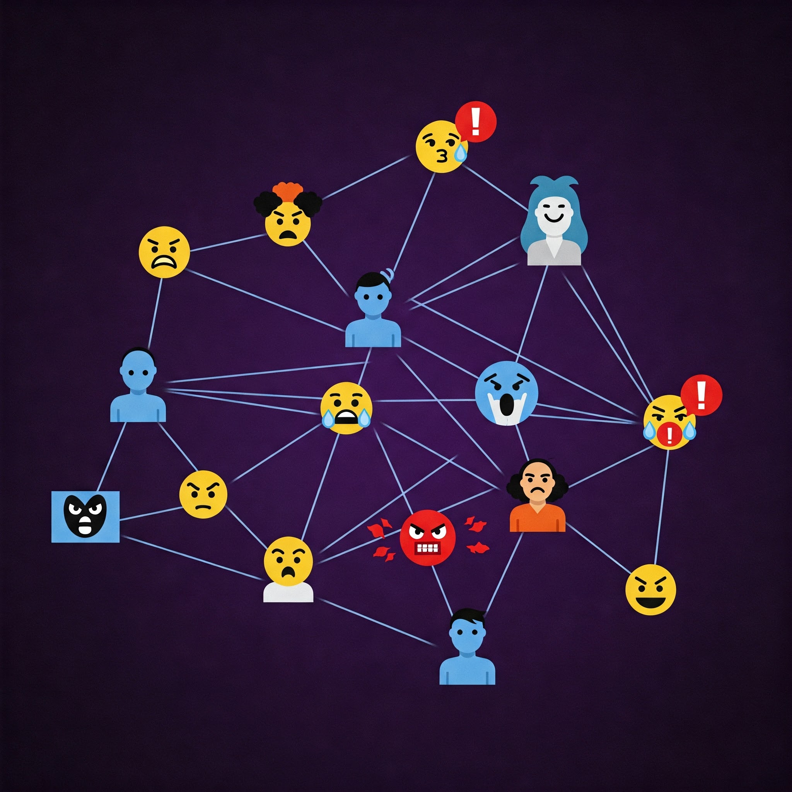
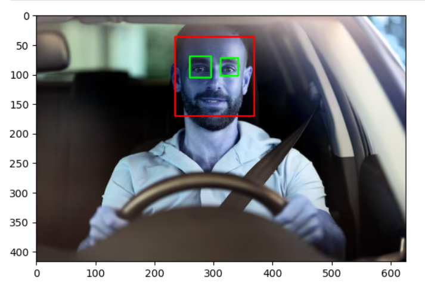

About Me
I'm a Data Science and Machine Learning enthusiast, currently seeking to break into the industry. I excel at researching and accomplishing tasks, even in unfamiliar fields. I also have a wide range of interests, including baking, literature, movies, and music, and I am confident in my knowledge of these areas.
Education
Master of Computer Application
Indira Gandhi Delhi Technical University for Women
2024-Present
Bachelor of Science
University of Delhi
2021-2024
High School
Balwantray Mehta Vidya Bhawan A.S.M.A., GK-II
2019-2021
What I have done so far
Work Experience
Machine Learning Intern
Pratinik Infotech | June 2025 - July 2025
Developed a chatbot application to resolve customer queries by classifying the queries into relevant category and priority level.
Data Science and Machine Learning Intern
Zaalima Development | April 2025 - June 2025
Worked on AI DataForge, a full-scale AI-driven platform enabling efficient ingestion, preprocessing, training, and deployment of ML models across multiple data formats (CSV, JSON) and automated model development and optimization using RESTful Flask-based APIs.
My Projects
Skinwise: Your Agentic AI Skincare Assistant
Skinwise is an interactive, full-stack AI skincare assistant developed using multi-agent orchestration (PhiData + Groq), tailored to answer questions reagrding skincare. It feature automated query classification and agent routing via Wikipedia, SerpAPI and web crawler agents to provide tailored insights. The React framework provides it a sleek UI along with a Flask backend.
View on GithubToxNet: A Multi-layer Network approach to Toxicity Analysis
ToxNet is a deep learning model based on the Graph Neural Networks Architecture, capable of categorizing tweets into their correct toxicity label. It constructs a multi-layered network out of the tweets to exploit their syntactic and semantic information. The research paper for this project has been accepted and presented in the Sixth International Conference on Soft Computing and its Engineering Applications, 2024.
View on GithubDrowsy Driver Detection
This project employes Computer vision for the task of detecting whether a driver is drowsy or alert by evaluating their image. It employe the powerful HAAR Cascade Classifier for image segmentation task and a deep CNN model to determine the alertness of the driver.
View on GithubMental Health Condition Prediction using Social Media Analysis

This project provides users with a convinient interface consisting of a basic questionnaire regarding their social media usage. Based on the user's answers, the projects employs an ensemble of 3 models: Fully Connected Nerual Network, AutoEncoder and ResNet. These models provide a multi-label classification of the user's mental health condition.
View on Github